Compress semantics continuously, realize language discretely, and let both sides co-adapt.
Hierarchical language generation separates continuous semantic modeling from discrete text realization, but its effectiveness depends on what information the latent space should compress and how the discrete generator should use it. We propose Cola2, which jointly studies continuous semantic compression, the discrete reconstruction–generation balance, and their co-adaptation. Cola2 dynamically segments text into semantic spans, controls the compression rate with an auxiliary-loss-free negative-feedback mechanism, and combines reconstruction and generation supervision to learn compact and predictive latent representations.
A block-causal masked diffusion model (MDM) decoder is jointly trained under clean, noisy, and dropped latent conditions, and classifier-free guidance (CFG) adjusts the balance between semantic reconstruction and autonomous generation. During training, token-prediction gradients update the encoder through the latents, driving the continuous representation and discrete generation to co-adapt, while Flow Matching prior learning is decoupled from representation learning via stop-gradient. At inference, the generated text is re-encoded under the fixed span layout, keeping the latent history consistent with the actual text context.
Systematic component analyses and controlled comparisons on five downstream tasks with about 210B training tokens validate the core designs and show competitive, unsaturated scaling. With only 346.03B source tokens, the unconverged checkpoint reaches a 60.10 eight-task average and surpasses Llama-3-8B on HellaSwag and StoryCloze despite its over 43× larger reported pretraining budget.
These results indicate effective transfer of the Qwen-initialized causal decoder's generation capability and substantial scaling headroom for hierarchical language generation. More broadly, continuous-latent hierarchical modeling can combine effectively with established token-space generation paradigms, including autoregressive and masked-diffusion decoders.
A compressed continuous latent prior organizes semantics; a capable token-space decoder reconstructs those semantics and generates the remaining detail.
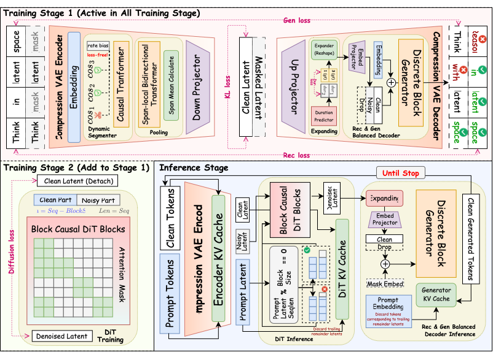
Dynamic segmentation assigns latent positions to content-aware spans. A gradient-free controller keeps the mean compression rate near its target without competing with representation learning.
A block-causal DiT fits the online latent distribution with Flow Matching. Its gradient is stopped at the encoder, while token-side gradients continue to shape the representation.
The DiT proposes a latent block, the decoder realizes tokens, and fixed-span feedback re-encodes those tokens so latent and discrete histories remain aligned.
We study how to construct a compressed semantic latent space, how to train its continuous generator, and how the discrete decoder should balance reconstruction with generation.
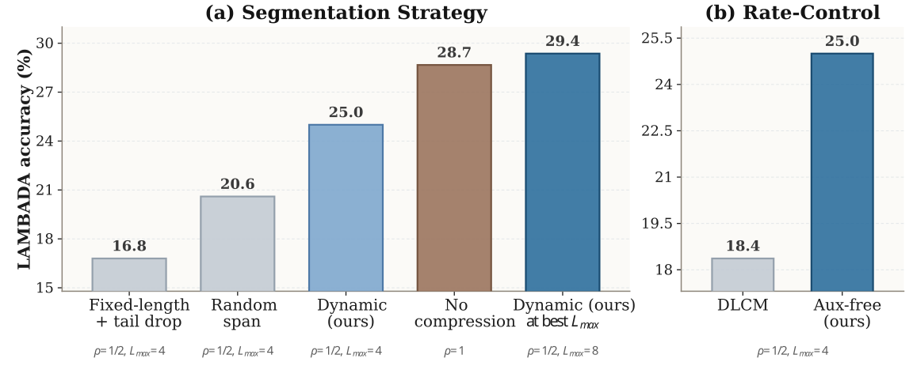
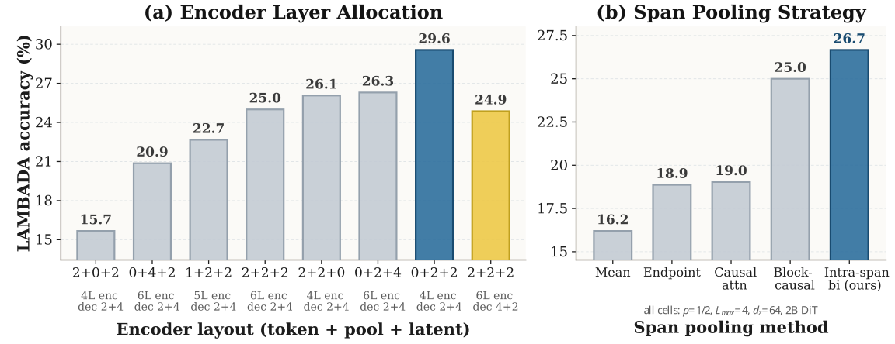
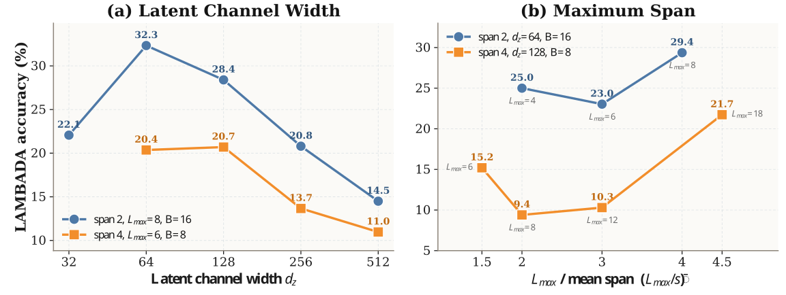
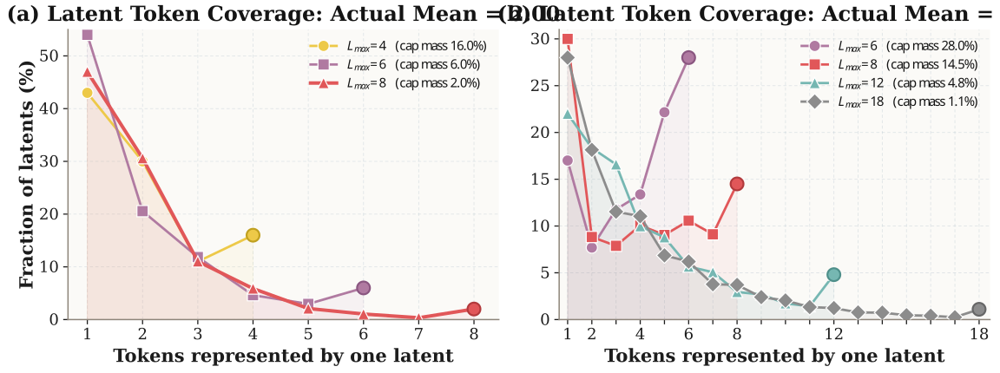
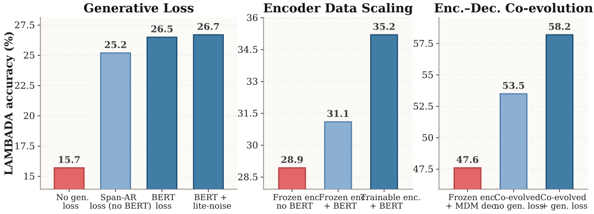
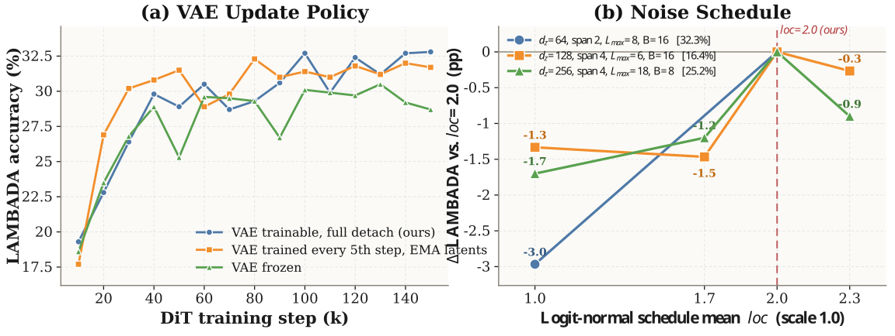
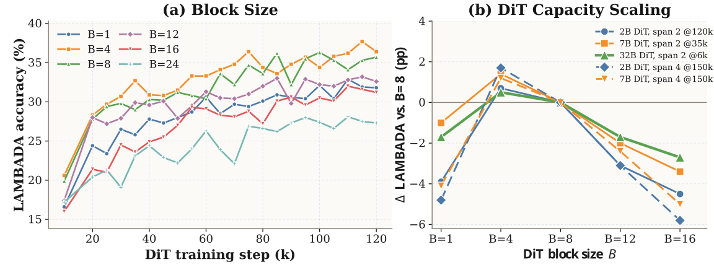
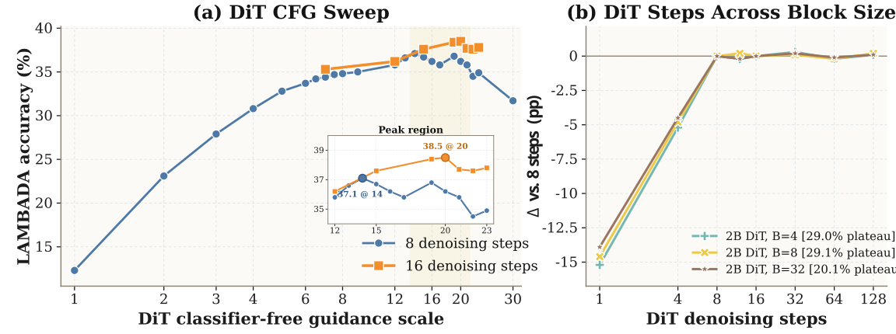
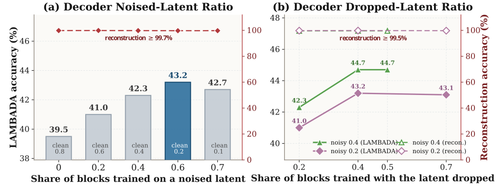
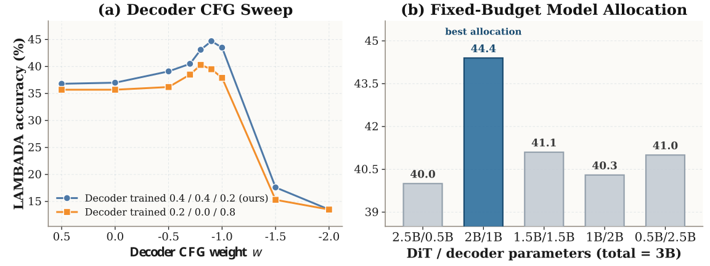
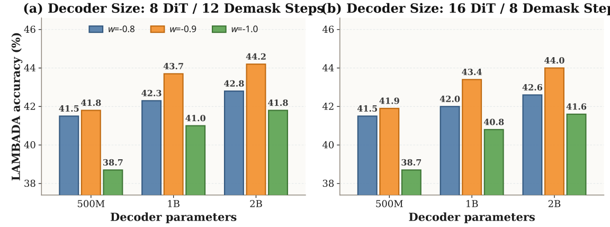
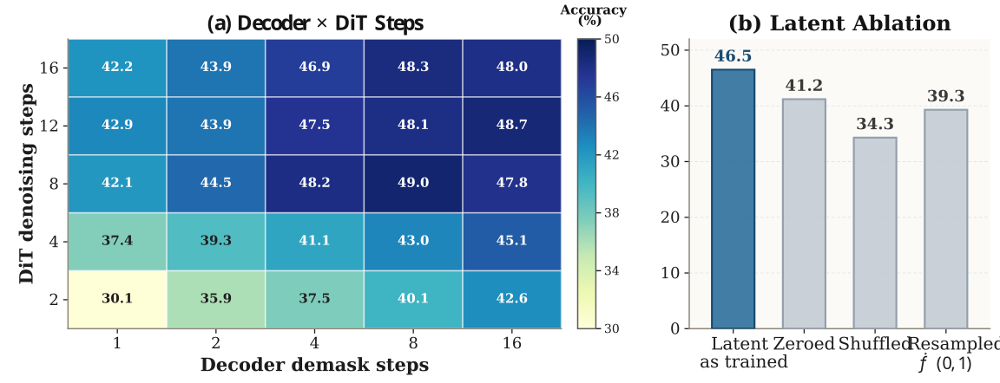
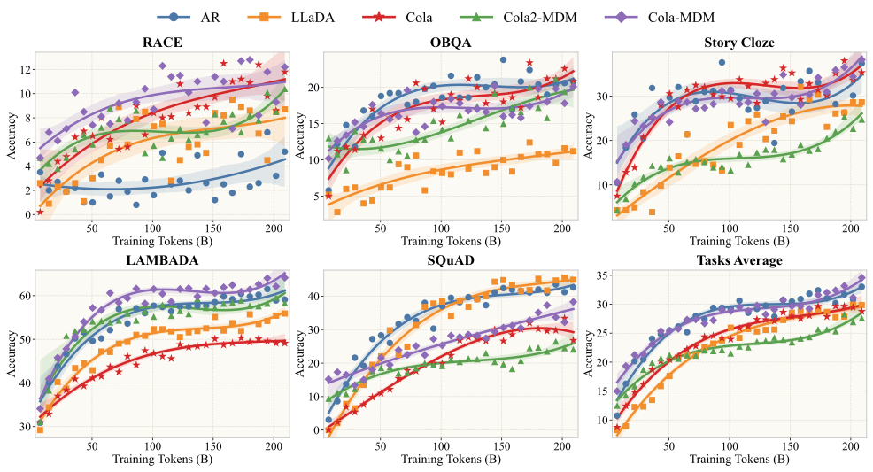
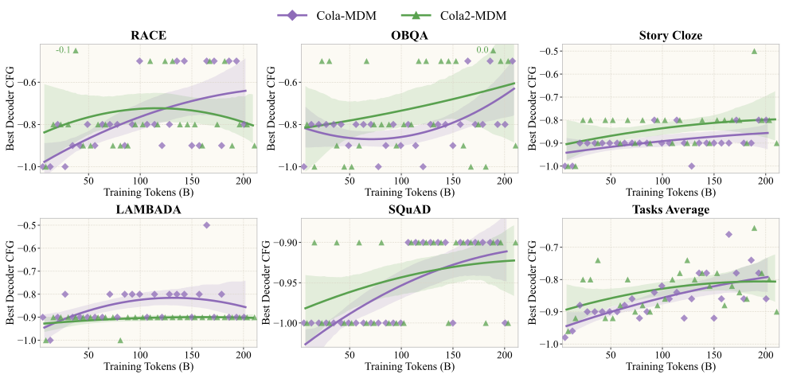
A separate resource-constrained run initializes the causal decoder from Qwen3-4B-Base. Its latent DiT remains unconverged, leaving substantial scaling headroom.
Stage I trains the VAE; Stage II co-trains the VAE and an approximately 4B latent DiT; Stage III continues the DiT.
Only 6.15 points behind Llama-3-8B despite that baseline reporting at least 15T pretraining tokens.
Cola2 surpasses Llama-3-8B on HellaSwag and StoryCloze under the reported token budgets.
The models below use different recipes, tokenizers, and token-counting conventions; this comparison contextualizes post-pretraining performance rather than isolating the generation paradigm.
| Task | Llama-3-8B | Qwen2.5-7B | Qwen3-8B-Base | LLaDA-8B-Base | Cola2 |
|---|---|---|---|---|---|
| Pretraining tokens | 15T+ | 18T | ~36T | 2.3T | 346B |
| RACE | 75.77 | 89.95 | 90.65 | 87.40 | 69.91 |
| NarrativeQA | 42.70 | 32.90 | 37.30 | 36.00 | 32.70 |
| HellaSwag | 39.21 | 75.67 | 68.13 | 69.65 | 41.75 |
| StoryCloze | 79.49 | 95.09 | 97.44 | 95.94 | 80.42 |
| LAMBADA | 75.70 | 71.82 | 71.20 | 67.90 | 63.00 |
| ARC-Easy | 90.86 | 96.00 | 97.35 | 93.85 | 87.62 |
| TruthfulQA | 63.04 | 69.03 | 72.58 | 64.87 | 54.10 |
| MMLU | 63.19 | 70.16 | 72.31 | 61.27 | 51.32 |
| 8-task average | 66.25 | 75.08 | 75.87 | 72.11 | 60.10 |
The results support the design of Cola2 in three respects.
Semantic compression: dynamic segmentation and generative supervision keep the latents strongly semantic at high compression rates; the former slightly surpasses the uncompressed model with an appropriate Lmax, and the latter raises accuracy from 15.7% to 26.7%.
Reconstruction–generation balance: mixed training dominated by noisy and dropped conditions enables the decoder both to faithfully use the latent (shuffling the latent costs 12.2 points) and to autonomously generate the residual information.
Continuous–discrete co-adaptation: the information placed in the latent should be determined by the decoder; co-training the encoder and decoder yields a 5.9-point gain, and both continue to benefit from more training data, giving the hierarchical model scaling trends comparable to or better than AR and LLaDA.
Although our results provide initial evidence for the feasibility, competitiveness, and scaling potential of Cola2, we view the current system as a starting point rather than a finished endpoint.
First, the model remains far from convergence, especially the latent DiT, while the present training scale is limited by available resources. Larger models, longer training, and broader data and compute budgets are therefore needed to establish its performance ceiling.
Second, compression reduces the dominant linear and attention FLOPs of the latent prior in theory, but end-to-end generation speed also depends on the decoder, CFG branches, latent feedback, and hardware utilization. Infrastructure co-design—including specialized kernels, cache management, and parallel scheduling—is needed to translate theoretical savings into practical speedups.
Third, Cola2 already shows compatibility with autoregressive and masked-diffusion decoders, but their co-training objectives, inference trade-offs, and optimal division of labor remain underexplored.
Finally, the continuous latent space may provide a shared interface between text and other continuous modalities such as vision, opening a path toward unified latent representations, cross-modal priors, and unified understanding and generation.
Cite the arXiv preprint using the entry below.
@article{guo2026cola2,
title = {Cola2: Co-Adaptive Hierarchical Language Modeling
with Continuous Semantic Compression and
Balanced Discrete Generation},
author = {Guo, Hongcan and Zhao, Yian and Wang, Feng and Nie, Shen
and Wei, Guoqiang and Zeng, Yan and Zhao, Hengshuang},
year = {2026},
journal = {arXiv preprint arXiv:2610.31305},
url = {https://arxiv.org/abs/2610.31305}
}